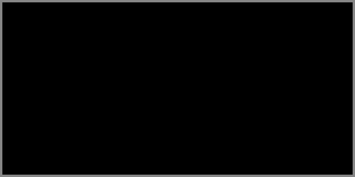

31. Ոչինչ Չանելու Արվեստը
 |
Ոչինչ չանելու արվեստը սկսվում է այնտեղ, որտեղ այլևս չես փնտրում ավարտ՝ այլ լինելու ձև։
Լռելու ձևը
Ոչ բոլոր լռություններն են խաղաղ։ Ոչ բոլոր ձայներն են աղմկոտ։ Լռելու ձևը սովորում ես ոչ թե խոսքի բացակայությամբ, այլ՝ ներկայության խտությամբ։
Երբ լռում ես՝ աշխարհը քեզ լսում է, որովհետև գուցեև առաջին անգամ դու չես խանգարում նրան լինել։ Քեզ սովորեցրել են, թե լռելը նշանակում է զիջել, բայց իրական լռությունը՝ ազատություն է ոչինչ չապացուցելու։ Դա չի նշանակում՝ թույլ լինել։ Դա նշանակում է չվախենալ՝ թողնելու ձայնդ կախված օդի մեջ։
Երբ նստում ես լռության մեջ՝ սկսում ես զգալ ներսիդ աղմուկները։ Դրանք ուզում են բարձրանալ։ Դու պարզապես չես արձագանքում, քանզի լռությունը պատ չէ՝ այլ անցում է։ Լռության ձևերը շատ են։ Կա լռություն, որ խփում է, կա լռություն, որ պահում է, կա լռություն, որ բացում է իր մեջ մի ողջ տիեզերք։ Երբ լռում ես առանց տագնապի, դու դառնում ես բան, որ խոսքի կարիք չունի։ Դու դառնում ես լեզվից անդին։ Դու ինքդ լռություն ես դառնում։
Ժամանակ լռության համար
Այստեղ թողնում եմ դատարկություն՝ մի ամբողջ էջ առանց բառերի։ Փակվիր քո մեջ, մի շարժվիր մի պահ:
Առանց մեկնաբանության
Հարց՝ առանց հարցին տրվելու.
Ե՞րբ ես վերջին անգամ լռել՝ առանց սպասելու, որ խոսելուդ ժամանակը գա։
Մի պատասխանիր։ Թող հարցը մնա լռության մեջ։
Անգործի ճշգրտությունը
Ոչինչ չանելը գայթակղիչ է, բայց այն` մտքին խառնված, անմատչելի է: Անմատչելի է, որովհետև միտքը միշտ ուզում է «անել»՝ նույնիսկ երբ որոշում է «ոչինչ չանել»։ Բայց կա մի վիճակ, երբ չանելն ունի իր ձևը։ Չես քաշվում, չես հապաղում, անտարբեր չես, բայց դու պարզապես ճշգրիտ չես անում։
Այդ ճշգրտությունը նման է շնչառության։ Դու չես մտածում դրա մասին, բայց այն կա՝ գոյության խորունկ ներդաշնակության պես։ Երբ մարդուն թվում է, թե ինքը ոչինչ չի անում, բայց բազմիցս նա աղմկում է ներսից, հարվածում անտեսելի բաներին՝ մտքով, անհանգստությամբ, սպասումով։ Իսկ ճշգրիտ անգործությունը համաժամանակեցվում է իրականության հետ, դառնում է ներկայի նուրբ հպում՝ երբ դու չես փորձում առաջ ընկնել կամ ետ պոկվել։ Դու պարզապես տեղում ես։ Ոչ թե ծանրացած, այլ՝ արմատացած։
Ահա ինչպիսինն է անգործի ճշգրտությունը՝ այն թեթև է, բայց հաստատ ինչպես քարը՝ հանգիստ ու անշարժելի։ Դու ոչինչ չես անում, բայց հենց դրանով չես խանգարում լինելուն լինել։
Ժամանակ առանց շարժման
Թող այս տարածությունը չլինի բացակա, այլ մարմնացած անգործություն՝ որպես ընթերցման ներկա։
Առանց մեկնաբանության
Մի հարց՝ առանց պատասխանի.
Իսկ երբ դու «ոչինչ չէիր անում», արդյո՞ք իսկապես կայիր։
Երբ անում ես ոչինչ
Երբեմն ամենախորը բանը տեղի է ունենում այն ժամանակ, երբ քեզ թվում է թե ոչինչ տեղի չի ունենում։ Դու նստած ես, չես շարժվում, չես խոսում, ոչինչ չես «անում» բայց ներսումդ մի բան է տեղափոխվում, կարծես մի ամբողջ ձոր հարթվում է անտեսանելի եղանակով։ Դու չես բռնացնում պահը, բայց այն է քեզ բռնում։
Այդ վիճակում գործողությունն անջատվում է իր սովորական իմաստից։ Այլևս չկա նպատակ, չկա արդյունք, չկա նույնիսկ սպասելիք։ Կա միայն ընթացք՝ առանց քարշի, առանց ձայնի, առանց ճիգի։ Դու անում ես ոչինչ, բայց այդ «ոչինչ»-ը համարժեք չի դատարկության։ Այդ «ոչինչ»-ը հղի է։ Նրա մեջ ծնվում է մաքրումը, հողմի պես անցնում է աղմուկը, և մնում է մի նրբագույն զգացողություն՝ այն, որ կյանքը շարժվում է անգամ առանց քեզ։ Որ դու վերջապես ազատ ես՝ չխանգարելու նրան։
Երբ անում ես ոչինչ, դու դառնում ես ինքդ։ Առանց վարակի։ Առանց դրսից բերված կաղապարի։ Դու մնում ես, ինչպես ծառը մնում է կանգնած ու ապրող, նույնիսկ երբ ոչ ոք նրան չի տեսնում։ Դա լռակյաց գործողություն է։ Դա չառանձնացող հաղթանակ է։ Դա գոյություն է՝ առանց ապացույցի կարիքի։
Տարածք ոչինչի համար
Թող այստեղ ոչինչ լինի և թող ոչինչը ապրի։ Մի շտապիր մնա։
Առանց մեկնաբանության
Հարց, որը չի պարտադրում, բայց առաջանում է.
Ի՞նչ է տեղի ունենում ներսումդ, երբ արտաքին աշխարհը չգիտի որ գոյություն ունես։
Դատարկության գործն ու գործի դատարկությունը
Բոլորովին դատարկը շատ աղմկոտ է լինում։ Նա ձգտում է լցվել ամեն գնով։ Նա վախենում է իր չլինելուց։ Նրա շարժումը ոչ թե գործ է, այլ փախուստ է դատարկությունից։
Երբ սկսում ես իսկապես տեսնել, հասկանում ես շատ բաներ՝ այն ինչ մենք «գործ» ենք համարում, իրականում շարժման ձևով ձևավորված անիմաստություններ են։ Մենք շարժվում ենք, որպեսզի չլսենք ներսի լռությունը, խոսում ենք, որպեսզի չզգանք որ չգիտենք, զբաղված ենք, որպեսզի չտեսնենք, որ մենք անհամարձակ նստել ենք ինքներս մեզ հետ։ Բայց իսկական դատարկությունը չի խառնվում ոչնչի։ Նա ունի ներքին ամբողջություն։ Նա հանգիստ է, և հենց այդ հանգիստով է զորավոր։
Երբեմն մարդը տարիներով աշխատում է գերզբաղված, գերհոգնած, գերծանրաբեռնված, ու հետո մի պահ կանգ է առնում և զգում, որ մաշվել է ոչ թե գործից, այլ գործի դատարկությունից՝ որովհետև դատարկ գործը ներսից քամում է էներգիատ և չի լիացնում հոգիդ։ Իսկ երբ նստում ես լուռ մի տեղ, առանց հոսելու աշխարհի շարժման մեջ, և տեսնում ես միայն սենյակի պատը, ու լսում ես քո սրտի զարկը՝ դատարկությունը լցվում է քո ներկայությամբ։ Այդ ներկայությունը գործ չէ՝ բայց ավելին է քան բոլոր գործերը միասին վերցրած։
Դատարկ էջ՝ որպես հիշեցում
Թող այս էջը մնա դատարկ, որպեսզի ներսիդ տարածքի գոնե մի մասը վերջապես լինի քոնը, այլ ոչ ուրիշինը։
Առանց մեկնաբանության
Հարց, որ չի սպասում պատասխանի, բայց չի էլ լռում.
Արդյո՞ք ամեն ինչ, ինչ դու անում ես, իրոք արժե քո ներսի լռությանը։
Չանելու մասին
Ոչինչ չանելն այնքան մոռացված արհեստ է, որ անգամ մտածելը դրա մասին թվում է անթույլատրելի։ Մարդ պետք է պիտանի լինի, պետք է օգտակար լինի, պետք է շարժվի առաջ, աճի, զարգանա։
Իսկ եթե պետք չէ… եթե չանելը հենց այն է, ինչի կարիքը դու ունես ոչ որպես հոգնածության արդյունք, այլ որպես գոյության իսկական ձև։
Չանել՝ չի նշանակում նվաղել անգործությունից։ Չանել, նշանակում է չգործել՝ երբ ներսումդ ոչինչ չի կանչում, չգցվել առաջ՝ երբ ներսդ կանգնած է։ Սա գործողություն չէ։ Սա զսպվածություն է, հնարավորություն՝ չխախտելու եղածը իր հոսքի մեջ։
Երբեմն միակ խելացի քայլը հենց չանելն է, որի միակ զորավոր արձագանքը լռությունն է։ Միակ ճշգրիտ շարժումը՝ չշարժվելն է։ Քանի դեռ չանելու մեջ տեսնում ես ձախողում՝ չես ճանաչում քեզ ամբողջապես։ Բայց երբ չանելն այլևս մեղք չի թվում՝ այլ ազատություն, այդ ժամանակ դու դուրս ես գալիս պարտադրված ընթացքից։
Դու այլևս չես ենթարկվում շարժման վախին։ Դու դառնում ես ներկայություն՝ առանց ճիգի։ Դու պարզապես մնում ես՝ և այդ մնալը շատ հաճախ ավելի բովանդակալից է, քան բոլոր վազքերը միասին վերցրած։
Դադար՝ չանելու համար
Թող այս պահը լինի դադար, բայց ոչ թե էջ՝ այլ հանգրվան։
Առանց մեկնաբանության
Անտեսանելի հարց, որ կարող է ապրել ընդամենը քո հայացքի խորքում.
Ի՞նչ է քո չարածը ասում քո արածի մասին։
Լիքը պահվող դատարկությունը
Դատարկությունը, երբ պահում ես այն ինչպես պահում են գինին՝ մութ տարայում, դառնում է խմելիք՝ ոչ մի կերպ չասված, բայց արդեն հասունացած։ Դու չես լցնում դատարկությունը։ Դու չես խանգարում նրան լցվել իրենով։ Դատարկության այն տեսակը, որից մարդ փախչում է, իրականում մարմնացված լռություն է՝ լեցուն, խորը, սպասող։
Դու մի պահ նստում ես՝ ու այլևս ոչ մի տեղ չես գնում։ Ու երբ ոչինչ չի պատահում, երբ քեզ ոչ ոք չի պահանջում, երբ չկա մի բառ, մի նամակ, մի ահազանգ, մի հեռախոսազանգ… դու սկսում ես զգալ թե ով ես դու։ Դու լիքը չես բառերից, պարտականություններից կամ շփումներից։ Դու լիքն ես՝ քանի որ դատարկությունը դուրս է քաշել քեզանից ավելորդը։
Ինչպե՞ս է հնարավոր լցվել դատարկությամբ. Միայն երբ այլևս չես փորձում լցնել ինքդ քեզ, այդ ժամանակ դատարկությունը դառնում է տարածք՝ ներսդ վերաշենելու համար։ Լիքը պահվող դատարկությունը պաշարված չէ վախերով։ Նա անհամարձակ չէ, հանգիստ է և համեստ։ Նա չի պնդում իր կարևորությունը, բայց ներկա է այնպես, ինչպես հողն է ներկա արմատների տակ։
Դատարկությունը որպես սրբավայր
Այս էջը թող չմնա դատարկ, այլ պահի ներսիդ լռությամբ ստեղծված՝ ամեն ինչ ասող փոքրիկ բացատը։
Առանց մեկնաբանության
Լուռ հարց՝ մնացող միտք.
Երբ ամեն ինչ դատարկվում կամ դադարում է, ի՞նչն է մնում։ Ու արդյո՞ք մնում է։
Չասվածի լեզուն
Չասված բաները չեն մոռացվում։ Դրանք նստում են ներսում, չեն մարում, չեն կորում։ Դրանք ձայներ չունեն, բայց շարունակում են հնչել։ Երբեմն մի հայացքն ավելի ամբողջական է, քան մի ամբողջ բացատրությունը։ Երբեմն ձեռքի թեթև շարժումը՝ ավելի ազնիվ խոստովանություն է, քան խոսքը։ Եվ երբ դու լռում ես ոչ թե որովհետև չես կարող խոսել, այլ որովհետև այլևս խոսելու կարիք չկա, այնժամ դու արդեն խոսում ես մի լեզվով՝ որ ոչ ոք չի սովորեցրել, բայց բոլորը ներսում ճանաչում են։
Չասվածի լեզուն՝ դա զգացմունքի մարմինն է։ Դա լռության մեջ ապրող նշանակություն է։ Դա խոսք չէ, բայց հասկացվածություն է։ Երբ քո ներկայությունը դառնում է բավական՝ առանց հիմնավորման, երբ քո լռությունը դառնում է լսելի՝ առանց ձայնի, երբ քո բացակայությունն անգամ ներկա է՝ դու սկսում ես խոսել չասվածի լեզվով։ Դա լեզու է, որին պետք չէ բառարան։ Դա լեզու է, որ փշրում է պնդումները, բայց չի վիրավորում։ Դա լեզու է, որի մեջ կանչող ոչինչ չկա, բայց ամեն ինչ հնչեցնում է։ Եվ երբ խոսքդ դադարում է բառբառել՝ ու սկսում է լսվել ներսից, այդ ժամանակ այն արդեն չասվածի լեզվով է հնչում։
Լռությունը որպես արտահայտություն
Թող այս էջում չասված բան լինի։ Չլսված, բայց վերապրված քո ներսի կողմից՝ քո լռության լեզվով։
Առանց մեկնաբանության
Հարց՝ որ չես տալիս, բայց գիտես պատասխանը.
Իսկ ի՞նչ է այն, որ անընդհատ հնչում է քո ներսում և դու չես ասի։
Լինել առանց լինելու ճիգի
Դու կաս։ Բայց երբեմն դա քայքայում է քեզ, որովհետև մարդ սովոր է լինել՝ ինչ-որ բաներով, ինչ-որ ձևով, ինչ-որ չափով։ Երբ քո «լինելը» դառնում է հաստատում, ներկայացում, գործ կամ պաշտպանություն՝ այն սկսում է հոգնեցնել: Քեզ պետք է լինել պարզ՝ առանց առկա որևէ ճիգի։ Հենց սա է լինելու լուռ կանչը։ Ոչ թե կաս, այլ՝ բավական է որ լռելայն ներկա ես։ Ոչ թե պետք է լինես ինչ-որ բան՝ այլ պարզապես մնաս։ Ոչ թե փայլես, այլ չխանգարես ներսիդ շողերին։ Լինել առանց լինելու ճիգի՝ դա նշանակում է չստեղծել քեզ մի նոր տարբերակով՝ չձևակերպել եսդ, չդնել անվան տակ, այլ թույլ տալ, որ գոյությունդ հանգիստ նստի լռության կողքին։ Որովհետև հենց այդտեղ՝ ճիգից զերծ լինելը, դառնում է ամենազորեղ մի ներկայություն։
Մարդը նստած է։ Չի խոսում։ Չի շարժվում։ Նրա աչքերը բաց են։ Նրա ներսում չկա ոչ վախ, ոչ պատասխանատվություն՝ լինելու կամ չլինելու։ Նա պարզապես այստեղ է։ Նա չի խաղում, չի ներկայանում, չի ձևացնում։ Նա այստեղ է որպես հանգստի շերտ։
Դու զգում ես նրան՝ նույնիսկ երբ նա ոչինչ չի ասում։ Դու վստահում ես նրան՝ որովհետև նա ոչինչ չի ճնշում։ Դու խաղաղվում ես նրա կողքին՝ որովհետև նրա մեջ չկա ճիգ՝ լինելու։ Դա է լինելու իսկական կերպը։
Տարածություն առանց ակնկալիքի
Թող այս տարածքը չդառնա դատարկ, այլ լինի ներկա անհաստատություն, որում ամեն ինչ թույլատրված է առանց ճշգրտման։
Առանց մեկնաբանության
Մեկ ծանր հարց, որը գալիս է ոչ թե գլխից, այլ սրտից.
Որքանո՞վ կլցվեր շուրջդ, երբ մեկնաբանվելուդ կարիքը հատեր։
Լուռ ներկայության արվեստը
Ի՞նչ է պետք մի տարածություն լցնելու համար։ Ոչ միշտ ձայն։ Ոչ միշտ շարժում։ Ոչ միշտ խոսք։ Լիարժեք ներկայությունը հաճախ լռող է։ Այն լցնում է տարածքը ոչ թե իր արտահայտվելով, այլ իր սկզբունքային հանգստությամբ։ Այն չի փորձում դառնալ։ Այն պարզապես կա։ Լուռ ներկայությունը դատարկ չէ։ Այն շնչում է, զգում է, արձագանքում է, բայց չի ձգտում բացատրվել։ Այն չի անհանգստացնում իր չերևալու պատճառով, որովհետև իր ներկայությունն արդեն վավերացում է առանց վավերացման պահանջի։
Լուռ մարդը չի պարտադրում իր զգալը։ Նա պարզապես գոյություն է զգալու հնարավորության մեջ։ Նա կարող է նստել կողքիդ՝ ու ոչ մի բառ չասել, բայց դու կհիշես նրան ամբողջ կյանքում։ Որովհետև նա չխանգարեց քո ներսին բացել իրեն։ Լուռ ներկայությունը արվեստ է։ Այն չի ուսուցանվում՝ այլ ապրեցվում է, չի ցուցադրվում՝ այլ զգացվում է։ Նրան չես ճանաչում՝ այլ վստահում ես։ Եվ երբ դու դադարում ես աղմկել, երբ մտքերդ դադարում են ժխորել ուշադրությունդ, երբ անգամ լռությունդ արդեն խոսում է իր ներկայությամբ՝ դու դառնում ես լուռ արվեստի կրող։
Ոչինչ չանելով՝ մնալ որպես ներկայություն։ Չխոսելով՝ արտահայտվել որպես հանգստություն։ Չմոտենալով՝ հասնել։
Բաց տարածք՝ լուռ ներկայության համար
Թող այս դատարկ էջում լինի քո լուռ ներկայությունը՝ ոչ որպես նշան, այլ որպես չպարտադրող նշմարելիություն։
Առանց մեկնաբանության
Լուռ հարց, որ ձևակերպվում է մի պահի լռության միջից. Կլցնե՞ս արդյոք տարածքը քո ներկայությամբ, թե՞ պարզապես կանցնես անհետ։
Վերջ չունեցող հանգիստ
Հանգստանալ նշանակում է չփորձել այլևս։ Չմղվել առաջ, չկռվել, չդիմադրել՝ ոչ աշխարհին, ոչ ինքդ քեզ։ Բայց երբ մենք ասում ենք «հանգիստ», հաճախ նկատի ունենք պատրաստություն նոր շարժման համար։ Որպես դադար՝ ուժ հավաքելու։ Որպես նոր մղման նախերգանք։
Իսկ ի՞նչ եթե ոչ։ Ի՞նչ կլինի, եթե հանգիստը ոչ թե անցումային պահ է, այլ՝ մնալու բնույթ։ Երբ մի օր դու նստում ես, ու այդ նստած վիճակից այլևս վեր չես կենում, ոչ թե որովհետև ուժ չունես, այլ որովհետև այլևս կարիք չունես։ Դու գտել ես քեզ մի տարածության մեջ, որից ոչ մի տեղ գնալ պետք չէ։ Որովհետև դու արդեն այնտեղ ես։ Սա այն հանգիստն է, որը չունի վերջ, որովհետև նա չի տանում քեզ որևէ տեղ։ Նա ոչինչ չի խոստանում։ Նա ուղղակի չի ավարտվում ոչ թե անվերջ ձգվող ժամանակով, այլ՝ անհատնում ներկա լինելու մեջ։
Հանգիստ, որ վերածվել է ամբողջական վիճակի՝ սա է լինելը առանց պայմանի։ Սա է ներսիդ աշխարհի վերջնական հարթեցումը՝ ոչ որպես պայքարի հաղթանակ, այլ որպես հանգստի բնական գոյություն։
Դու այլևս չես դիմադրում։ Դու չես ծրագրում։ Դու չես սպասում։ Դու խաղաղ ես։ Եվ այդ խաղաղությունը ոչ մի տեղ չի գնում, որովհետև դու չես շարժվում դրանից հեռու։
Հանգիստ առանց եզրագծի
Թող այս էջում ոչինչ չփոխվի։ Թող այն մնա նույնը՝ ինչպես քո ներսում լցված մի անդունդ, որից վախենալ պետք չէ։
Առանց մեկնաբանության
Անձայն մի հարց, որը սահում է լռության եզրով.
Եթե որևէ բան երբեք չփոխվի, դու կարո՞ղ ես սիրել այդ անփոփոխությունը։
Վերջաբանի փոխարեն եզր՝ որ չկա
Ոչինչ չանելու արվեստը ծնվեց այնտեղ, որտեղ բառերը սկսեցին հնչելու փոխարեն լռել քեզ հետ՝ ոչ թե խոսել քո փոխարեն։ Այստեղ դու եղար չդիմանալով, չդիմելով, չապացուցելով, չհաղթելով, այլ ապրելով։
Բաց էջ հետգրության համար
Թող այս էջում քո լռությունը խոսի։ Թող այս էջում ոչինչ չանելդ դառնա քո ամենաամբողջական գործողությունը։
Լռության վերջին հարցը առանց մեկնաբանության
Առանց պատասխանելու ստիպված լինելու...
Դու կկարողանա՞ս ապրել մի կյանք, որտեղ ոչինչ չանելը ոչ թե ծուլություն է, այլ՝ իմաստ։
«Մենք կառուցում ենք կամուրջներ այնտեղ, ուր մյուսները տեսնում են միայն անդունդներ։»
© 2026 Մոնումենտալ Կամուրջ: Այս կայքի բովանդակությամբ կարող եք ազատորեն կիսվել համացանցում՝ հղում տալով սկզբնաղբյուրին: Տպելու, տպագրելու կամ գիրք կազմելու միջոցով, կամ այլ ֆիզիկական ձևով և որևէ տեխնոլոգիական կրիչով տարածելը առանց հեղինակի գրավոր համաձայնության արգելվում է: Գիտական, կրթական կամ ստեղծագործական աշխատանքներում մեջբերումները թույլատրելի են պայմանով, որ պարտադիր պետք է նշվի կոնկրետ էջի ամբողջական հասցեն (URL) և աշխատության վերնագիրը: Առանց հեղինակի գրավոր համաձայնության՝ արգելվում է նաև կայքի նյութերի թարգմանությունը որևէ լեզվով և դրանց տարածումը այլ լեզուներով: